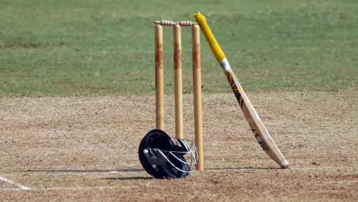

    <section id="co">
      <div id="cont">
  <h1>ABOUT CRICKET</H1>

<p>Cricket is played on either circular or oval shaped grounds. There is a rectangular area in the middle of the ground, called the pitch, which is the most important part of the field. On the pitch, all the bowling and batting takes place. A set of wooden sticks, called stumps and bails, is placed on both ends of the pitch. A cricket ball; made of wood and leather, and a wooden bat are required to play the sport. The batsmen wear a full set of protective gear.

In the traditional form of the game, a match is played between two teams, with 11 players on each team, in an innings format. One team gets to bat while the other team bowls and fields. The collection of all the overs that a team bats for, is called an innings. The team that bats first, tries to score as many runs as possible. After the two teams have played their innings, the team with the most runs is the winner.

indian cricket playersCricket is very popular in India
Cricket matches are played in several different formats. Generally, the formats are:

Limited Over format: Each innings is played for a fixed number of overs. A one-day (ODI) format - 50 Overs per innings, and a T20 format - 20 overs per innings, are the two types of limited overs cricket currently played.
Unlimited Overs format: More commonly known as a test match, is an extended form of cricket, where each team gets to play two innings without any overs restriction. A single match can go on for up to 5 days.</p>
</div>
</section>
